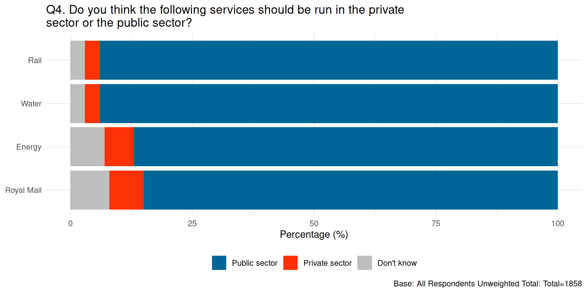
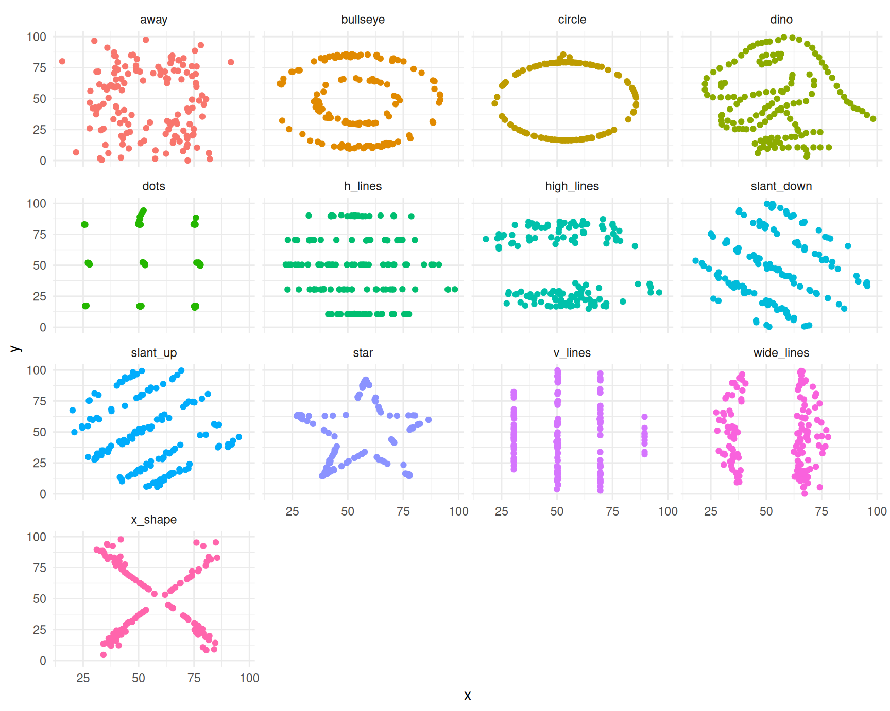

ggplot(penguins, aes(x = bill_length_mm, y = bill_depth_mm)) +
geom_point()Lab 4 - Potpourri
Lab
Introduction
In this lab you’ll review and get practice with a variety of concepts, methods, and tools you’ve encountered thus far.
Part 1 - All about Quarto
Question 1
Add each of strings below to the code chunk provided in your document, render the document, and determine if the string is a proper code chunk label. If not, explain why and describe how you could fix it so the document renders.
- Chunk label 1:
#| label: a-label #| with-a-line-break- Chunk label 2:
#| label: areaaaaaaaaaaaaaaaaaaaaaallllllllllllllllllyyyyylooooooooooooooooooonglabel- Chunk label 3:
#| label: label with spaces- Chunk label 4:
#| label: label-with-dashesTipTry each label option in the code chunk provided in your document. If it gives you an error (document doesn’t render), you know it’s not a proper chunk label.
Chunk 1 is invalid because #| with-a-line-break is not a recognized Quarto chunk option. Chunk 2 is valid but bad practice because it is excessively long. Chunk 3 is invalid because chunk labels cannot contain spaces. To fix it, replace the spaces with dashes or underscores (e.g., label-with-spaces). Chunk 4 is valid and follows proper formatting.
- Which of the chunk label options above is the best option? Explain your reasoning in 1-2 sentences.
Chunk label 4 (label-with-dashes) is the best option. It is concise, informative, and uses dashes instead of spaces, which follows standard tidyverse/R coding best practices for naming conventions.
Question 2
You have the following code chunk:
Add the following code chunk options, one at a time, and set each to false and then to true. After each value, render your document and observe its effect. Ultimately, choose the values that are the most appropriate for this code chunk. Based on the behaviors you observe, describe what each code chunk option does.
echowarningeval
echo: When set to false, it hides the actual R code from the rendered final PDF/HTML document, but still runs it and shows the output (the plot). When set to true, the code is visible. warning: When set to false, it suppresses warning messages from appearing in the rendered document (such as ggplot warning us about removed NA values). eval: When set to false, Quarto will NOT execute the code block at all (no plot will be generated). When set to true, the code runs normally. For this specific chunk, the best settings are usually echo: true, warning: false, and eval: true.
Question 3
You have the following code chunk again.
ggplot(penguins, aes(x = bill_length_mm, y = bill_depth_mm)) + geom_point()Add
fig-widthandfig-aspas code chunk options. Try settingfig-widthto values between 1 and 10. Try settingfig-aspto values between 0.1 and 1. Re-render the document after each value and observe its effect. Ultimately, choose values that make the plot look visually pleasing in the rendered document. Based on the behavior you observe, describe what each chunk option does.fig-width: Changes the width of the generated plot in the rendered document (measured in inches). fig-asp: Changes the aspect ratio of the plot (height divided by width). A common aesthetically pleasing value is 0.618 (the Golden Ratio).
You have the following code chunk, but look carefully, it’s not exactly the same!
gplot(penguins, aes(x = bill_length_mm, y = bill_depth_mm)) + geom_point()Add
erroras a code chunk option and set it tofalseand then set it totrue. After each value, render your document and observe its effect. Ultimately, choose the value that allows you to render your document without altering the code. Based on the behavior you observe, describe what this code chunk option does.error: When set to false (the default), rendering the document will completely fail and halt if there is an error in the R code. When set to true, Quarto will render the document anyway and print the actual R error message directly into the PDF/HTML. This is useful for showing exactly what went wrong for debugging
Tip
Reading the documentation might also be hepful.
Render, commit, and push one last time. Make sure that you commit and push all changed documents and your Git pane is completely empty before proceeding.
Part 2 - Misrepresentation
Question 4
The following chart was shared by @GraphCrimes on X/Twitter on September 3, 2022.

- What is misleading about this graph?
The most misleading aspect of this graph is that it seems like its cut off on the left most side, it i.e. 87% is visually only taking up half the bar.
- Suppose you wanted to recreate this plot, with improvements to avoid its misleading pitfalls from part (a). You would obviously need the data from the survey in order to be able to do that. How many observations would this data have? How many variables (at least) should it have, and what should those variables be?
To recreate this plot from raw survey data, the dataset would need to have 1,858 observations (rows), representing each of the respondents noted in the chart’s footnote (“Unweighted Total = 1858”). It would require at least 2 variables in a tidy, long format: one for the service being evaluated (Rail, Water, Energy, Royal Mail) and one for the respondent’s preference (Public sector, Private sector, Don’t know).
- Load the data for this survey from
data/survation.csv. Confirm that the data match the percentages from the visualization. That is, calculate the percentages of public sector, private sector, don’t know for each of the services and check that they match the percentages from the plot.
survation <- read_csv("survation.csv")
survation_summary <- survation |>
pivot_longer(
cols = -ID, # Pivot everything EXCEPT the ID column
names_to = "service",
values_to = "response"
) |>
count(service, response) |>
group_by(service) |>
mutate(percent = round(n / sum(n) * 100)) |>
ungroup()
# Print the summary to confirm the percentages match the original image
survation_summary# A tibble: 12 × 4
service response n percent
<chr> <chr> <int> <dbl>
1 Energy Don't know 130 7
2 Energy Private sector 112 6
3 Energy Public sector 1616 87
4 Rail Don't know 56 3
5 Rail Private sector 56 3
6 Rail Public sector 1746 94
7 Royal Mail Don't know 149 8
8 Royal Mail Private sector 130 7
9 Royal Mail Public sector 1579 85
10 Water Don't know 56 3
11 Water Private sector 56 3
12 Water Public sector 1746 94Looking at the output of this table, we can confirm that the calculated percentages perfectly match the original chart (e.g., Rail is 94% Public sector, 3% Private, 3% Don’t know).
Question 5
Create an improved version of the visualization. Your improved visualization:
should also be a stacked bar chart with services on the y-axis, presented in the same order as the original plot, and services to create the segments of the plot, and presented in the same order as the original plot
should have the same legend location
should have the same title and caption
does not need to have a bolded title or a gray background
survation_summary |>
# 1. Reorder the factors so they plot in the correct order
mutate(
# Order for Y-axis (bottom to top in ggplot)
service = fct_relevel(service, "Royal Mail", "Energy", "Water", "Rail"),
# Order for stacking (left to right)
response = fct_relevel(response, "Public sector", "Private sector", "Don't know")
) |>
# 2. Build the plot
ggplot(aes(x = percent, y = service, fill = response)) +
geom_col() +
# 3. Add exact colors
scale_fill_manual(values = c(
"Public sector" = "#006697",
"Private sector" = "#FF3205",
"Don't know" = "gray"
)) +
# 4. Add labels and caption
labs(
title = "Q4. Do you think the following services should be run in the private\nsector or the public sector?",
caption = "Base: All Respondents Unweighted Total: Total=1858",
x = "Percentage (%)",
y = NULL,
fill = NULL
) +
# 5. Apply theme and move legend to the bottom
theme_minimal() +
theme(legend.position = "bottom")
How does the improved visualization look different than the original? Does it send a different message at a first glance?
The improved visualization looks fundamentally different because all bars now start from a shared 0% baseline on the left, making it a standard stacked bar chart instead of a diverging one. At first glance, it sends a much clearer, more honest message: there is massive, overwhelming support for the public sector across all services. In the original plot, the center-alignment artificially pushed the red “Private sector” bars out into the middle of the graphic, making that tiny 3-7% segment look significantly larger and more prominent than it actually was.
Tip
Use \n to add a line break to your title. And note that since the title is very long, it might run off the page in your code. That’s ok!
Additionally, the colors used in the plot are gray, #FF3205, and #006697.
Render, commit, and push one last time. Make sure that you commit and push all changed documents and your Git pane is completely empty before proceeding.
Part 3 - DatasauRus
The data frame you will be working with in this part is called datasaurus_dozen and it’s in the datasauRus package. This single data frame contains 13 datasets, designed to show us why data visualization is important and how summary statistics alone can be misleading. The different datasets are marked by the dataset variable, as shown in Figure 1.

Note
If it’s confusing that the data frame is called datasaurus_dozen when it contains 13 datasets, you’re not alone! Have you heard of a baker’s dozen?
Here is a peek at the top 10 rows of the dataset:
datasaurus_dozen# A tibble: 1,846 × 3
dataset x y
<chr> <dbl> <dbl>
1 dino 55.4 97.2
2 dino 51.5 96.0
3 dino 46.2 94.5
4 dino 42.8 91.4
5 dino 40.8 88.3
6 dino 38.7 84.9
7 dino 35.6 79.9
8 dino 33.1 77.6
9 dino 29.0 74.5
10 dino 26.2 71.4
# ℹ 1,836 more rowsQuestion 6
In a single pipeline, calculate the mean of x, mean of y, standard deviation of x, standard deviation of y, and the correlation between x and y for each level of the dataset variable. Then, in 1-2 sentences, comment on how these summary statistics compare across groups (datasets).
Tip
There are 13 groups but tibbles only print out 10 rows by default. Add print(n = 13) as the last step of your pipeline to display all rows.
datasaurus_dozen |>
group_by(dataset) |>
summarize(
mean_x = mean(x),
mean_y = mean(y),
sd_x = sd(x),
sd_y = sd(y),
cor_xy = cor(x, y)
) |>
print(n = 13)# A tibble: 13 × 6
dataset mean_x mean_y sd_x sd_y cor_xy
<chr> <dbl> <dbl> <dbl> <dbl> <dbl>
1 away 54.3 47.8 16.8 26.9 -0.0641
2 bullseye 54.3 47.8 16.8 26.9 -0.0686
3 circle 54.3 47.8 16.8 26.9 -0.0683
4 dino 54.3 47.8 16.8 26.9 -0.0645
5 dots 54.3 47.8 16.8 26.9 -0.0603
6 h_lines 54.3 47.8 16.8 26.9 -0.0617
7 high_lines 54.3 47.8 16.8 26.9 -0.0685
8 slant_down 54.3 47.8 16.8 26.9 -0.0690
9 slant_up 54.3 47.8 16.8 26.9 -0.0686
10 star 54.3 47.8 16.8 26.9 -0.0630
11 v_lines 54.3 47.8 16.8 26.9 -0.0694
12 wide_lines 54.3 47.8 16.8 26.9 -0.0666
13 x_shape 54.3 47.8 16.8 26.9 -0.0656When looking at the summary statistics, they are virtually identical across all 13 groups. Every dataset has a mean x of ~54.26, a mean y of ~47.8, matching standard deviations, and a similiar correlation coefficient of roughly -0.06. Based solely on these numbers, one would assume these 13 datasets look exactly the same.
Question 7
Create a scatterplot of y versus x and color and facet it by dataset. Then, in 1-2 sentences, how these plots compare across groups (datasets). How does your response in this question compare to your response to the previous question and what does this say about using visualizations and summary statistics when getting to know a dataset?
ggplot(datasaurus_dozen, aes(x = x, y = y, color = dataset)) +
geom_point(show.legend = FALSE) +
facet_wrap(~dataset) +
theme_minimal()
Tip
When you both color and facet by the same variable, you’ll end up with a redundant legend. Turn off the legend by adding show.legend = FALSE to the geom creating the legend.
Despite having the exact same summary statistics in the previous question, these plots look drastically different, ranging from a dinosaur, to a star, to a bullseye, to random horizontal lines. This comparison highlights summary statistics alone can be highly misleading. We must always visualize our data to truly understand the underlying distributions and relationships before drawing conclusions. ::: render-commit-push Render, commit, and push one last time. Make sure that you commit and push all changed documents and your Git pane is completely empty before proceeding.
:::
Grading
The lab is graded out of a total of 28 points.
You can earn up to 4 points on each question:
4: Response shows excellent understanding and addresses all or almost all of the rubric items.
3: Response shows good understanding and addresses most of the rubric items.
2: Response shows understanding and addresses a majority of the rubric items.
1: Response shows effort and misses many of the rubric items.
0: Response does not show sufficient effort or understanding and/or is largely incomplete.